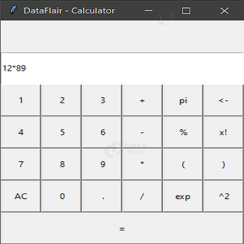

Portfolio
Local Library
This project required the creation of a dashboard for a local library, which show which books were available, which are currently borrowed, as well as other useful statistics. This was a front-stack project using mostly native JavaScript. Building the dashboard was a great excersize in the use of higher-functions. You can find the code here.

Decoder Ring App
The decoder ring project was a front-end development project using JavaScript to create ciphers that will allow someone to encode or decode messages. It was a great problem solving project, and good practice with string manipulation.You can find the repo with the code here.

Space Invader's Clone
This was a fun side-project, attempting to build a clone of the classic arcade game "Space Invaders". This application was built with Python, using the Pygame library. It was a great excersize in game logic and event listeners. Check out the code here.

Calculator App
Building a basic calculator with Python was an interesting excersize in working with native Python GUI modules, such as Tkinter. I was able to get a beginners understanding as to how a GUI is wired up to the applications functions. I was also introduced to concepts such as click/key events and lambda functions. Check out the code.
